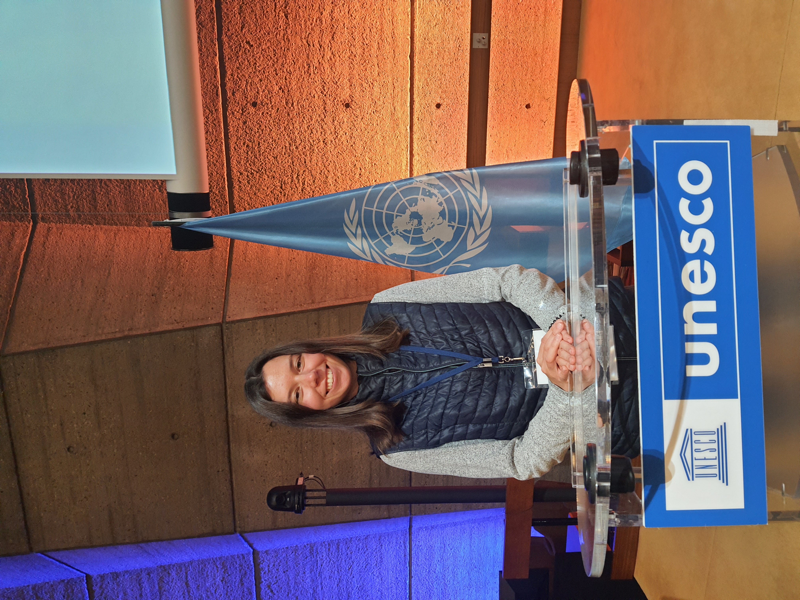

News
2026
Tutorial
Tutorial at LREC 2026: “Low-Resource, High-Impact”
A hands-on tutorial on building corpora for inclusive language technologies — from data collection to model training for underrepresented languages.
Paper
NLP for Social Good survey published at EACL 2026
Our large position paper and survey of challenges, opportunities, and responsible deployment of language technologies for positive social impact.
Teaching
New seminar: Responsible AI and Language Technologies at TUM
A seminar on ethics, fair data collection, AI for Social Good, and designing technology for people.
2025
Shared task
Findings of the WMT 2025 shared task on LLMs with Limited Resources
Training LLMs with limited data and compute for Upper Sorbian, Lower Sorbian, and Ukrainian — jointly evaluated on MT and QA.
Papers
Two papers at EMNLP 2025
EmoBench-UA, the first benchmark for emotion detection in Ukrainian, and data-efficient hate speech detection via cross-lingual nearest-neighbour retrieval.
Shared task
TextDetox at CLEF 2025: now 15 languages
We extended the multilingual text detoxification task with Italian, French, Hebrew, Hinglish, Japanese, and Tatar.
Award
ACL 2025 Best Resource Paper Award for BRIGHTER
Human-annotated emotion recognition datasets for 28 languages, primarily low-resource languages from Africa, Asia, Eastern Europe, and Latin America.
Talk
Talk at UNESCO — Language Technologies for All 2025, Paris
Presenting UkrDetect and our work on closing the data gap for Ukrainian NLP.

Talk
Papers
Two papers at COLING 2025
Multilingual and explainable text detoxification with parallel corpora, and cross-lingual text classification transfer for Ukrainian.